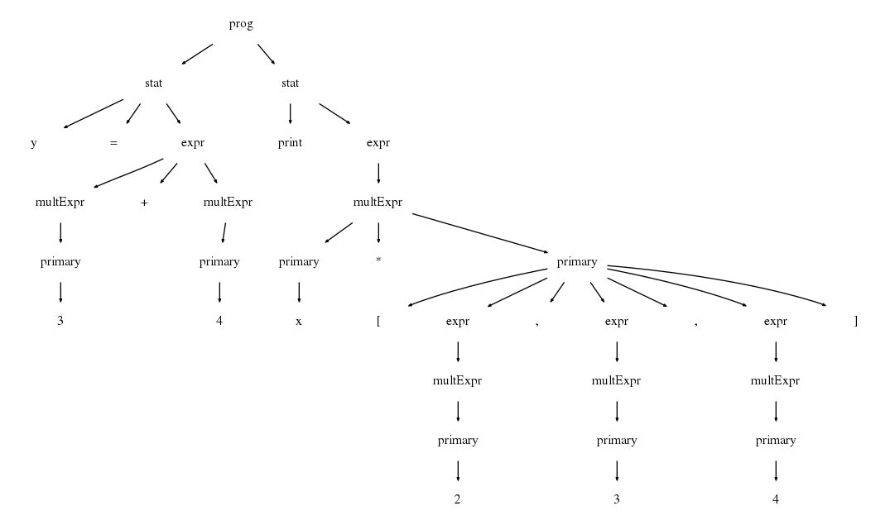

笔记: 编程语言实现模式-树文法
"编程语言实现模式"讲解了构建语言应用所需的实用型编译技术， 是一本不可多得的好书。唯一遗憾的是书中使用ANLTR3作为教程。而ANTLR4与ANTLR3相比有很大的变化，在降低文法书写难度等方面有很大改进，不过文法与之前版本的文法并不兼容"。书中从第6章起，内容都是基于ANTLR3的，所以这里尝试将书中使用ANTLR3实现的功能用ANTLR4来重构。书中的代码可以在这里下载, 本文中使用到的所有代码都可以在书中的代码找到。
本文中尝试重构的是"5.3 根据文法自动生成访问器"中的内容。
使用ANTLR3文法构建AST
ANTLR3的普通文法规则
书中的4.4节介绍了“使用ANTLR文法构建AST”的方法。在ANTLR3中，如果不使用树文法或语法动作, 是无法创建AST的，只能生成一个验证词法和语法是否正确的解析器。以下面的ANTLR3文法为例，在文法产生的Parser中, 每条规则对应的函数返回值为void, 如public final void prog() throws RecognitionException, 这时Parser只能验证输入是否合乎语法规则，做不了其他事情。 想要生成AST的话，就要使用树文法了(当然，不嫌麻烦的话使用规则动作也行)。
VecMath文法
// filename: IR/Vec/VecMath.g grammar VecMath; // START: stat prog : stat+ ; // match multiple statements stat: ID '=' expr // match an assignment like "x=3+4" | 'print' expr // match a print statement like "print 4" ; // END: stat // START: expr expr: multExpr ('+' multExpr)* ; // E.g., "3*4 + 9" multExpr: primary (('*'|'.') primary)* ; // E.g., "3*4" primary : INT // any integer | ID // any variable name | '[' expr (',' expr)* ']' // vector literal; E.g. "[1,2,3]" ; // END: expr ID : 'a'..'z'+ ; INT : '0'..'9'+ ; WS : (' '|'\r'|'\n')+ {skip();} ;
使用ANTLR3文法生成AST
ANTLR3内置了一些辅助构建AST的功能。 在options中将output设置为AST后，ANTLR就会给每个规则方法增加返回值tree, 启始规则会返回整个树的根节点。以下面4.4和5.3节中VecMath文法为例，Parser的每条规则函数会变成形如public final VecMathASTParser.prog_return prog() throws RecognitionException的形式, 调用Parser.prog()后，便能得到AST的root节点。这里, AST的结构是通过文法定义的。比如根据规则"stat: ID '=' expr -> ^('=' ID expr)", 解析器在匹配"ID '=' expr"语法结构时，会顺便构建根节点为'=', 子节点为'ID和'expr'的AST子树，具体的构建过程可以看一下VecMathASTParser.java代码。对于下面的"VecMath输入", VecMathAST文法构建出的AST如图1所示。
VecMath输入
x = 3+4
print x * [2, 3, 4]
 |
| 图1 |
VecMathAST文法
// 文件名: IR/Vec/VecMathAST.g // START: header grammar VecMath; options {output=AST;} // we want to create ASTs tokens { VEC; } // define imaginary token for vector literal // END: header // START: stat prog : stat+ ; // build list of stat trees stat : ID '=' expr -> ^('=' ID expr) // '=' is operator subtree root | 'print' expr -> ^('print' expr) // 'print' is subtree root ; // END: stat // START: expr expr : multExpr ('+'^ multExpr)* ; // '+' is root node multExpr : primary (('*'^|'.'^) primary)* // '*', '.' are roots ; primary : INT | ID | '[' expr (',' expr)* ']' -> ^(VEC expr+) ; // END: expr ID : 'a'..'z'+ ; INT : '0'..'9'+ ; WS : (' '|'\r'|'\n')+ {skip();} ;
使用ANTLR3树文法构建AST外部访问者
有了AST后, ANTLR3可以使用"树文法"来构建AST的外部访问者，所外"外部访问者"，是指访问过程不是在语法解析过程中进行的，而是独立于语法解析过程，是在有了AST之后，一个单独对AST进行访问的过程。 "树文法"与普通文法在语法规则上几乎没什么两样，区别: "树文法"以^开头。此外，两者产生的解析器的"输入"也不相同。对于普通的解析器，输入为词法解析器产生的词法token流; 而对于树文法解析器，它的输入是AST。5.3节中的树文法如下所示。有关@members {}等语法，请参照"The Definitive ANTLR4 Reference"。
这里解释一下"stat: ^('=' ID {print($ID.text+" = ");} expr) {print("\n");}", "^('=' ID expr)"这种语法: 匹配以"="为根节点，以'ID'和expr为子节点的AST子树，{print(ID.text+" = ");} 为“动作”, "ID {print($ID.text + " = ")}"表示在访问完"ID"节点后执行"{print($ID.txt + " = ")}"。
Print.g树文法
// filename: walking/tree-grammar/Print.g tree grammar Printer; // this grammar is a tree grammar called Printer options { tokenVocab=VecMath; // use token vocabulary from VecMath.g ASTLabelType=CommonTree; // use homogeneous CommonTree for $ID, etc. } @members { void print(String s) { System.out.print(s); } } // END: header // START: prog prog: stat+ ; // match list of statement subtrees // match trees like ('=' x 1) and ('print' ('+' 3 4)) stat: ^('=' ID {print($ID.text+" = ");} expr) {print("\n");} | ^('print' {print("print ");} expr) {print("\n");} ; // END: prog // START: expr expr: ^('+' expr {print("+");} expr) | ^('*' expr {print("*");} expr) | ^('.' expr {print(".");} expr) | ^(VEC {print("[");} expr ({print(", ");} expr)* {print("]");}) | INT {print($INT.text);} | ID {print($ID.text);} ; // END: expr
使用ANTLR4构建AST
ANTLR4构建AST的方式与ANTLR4有很大的不同，ANTLR4的解析器会自动返回'语法解析树'， 解析树的节点类型含有全部的语法规则名和词法规则名。并且, ANLTR4提供了遍历解析树的‘listener’和'visitor'。想要进一步构建AST或根据解析树做其他操作的话，可以直接使用'listener'或'visitor'，在遍历解析树的同时添加自己的操作逻辑即可。
注意，ANTLR4的语法文件以.g4结尾，语法和ANLTR4也不一样。具体的请参照"The Definitive ANTLR 4 Reference"。上面的VecMath.g用ANTLR4的语法重写之后的内容见下面"VecMath ANTLR4语法"。对于上节的"VecMath输入", ANTLR4 解析器产生的"语法解析树"见图2。对比图1和图2，AST比"语法解析树"要简洁很多。
VecMath ANTLR4语法
grammar VecMath; prog : stat+ ; stat : ID '=' expr | 'print' expr ; expr : multExpr ('+' multExpr)* ; multExpr: primary (('*'|'.') primary)* ; primary : INT | ID | '[' expr (',' expr)* ']' ; ID : 'a'..'z'+ ; INT: '0'..'9'+ ; WS: (' '|'\r'|'\n')+ -> skip ;
|  |
| 图2 |
使用ANTLR4构建AST访问者
ANTLR4并没有提供对AST访问的"树文法"，都得靠自己。
结论
所以，ANTLR4中是没有树文法的。不过有了"解析树"后，想要生成AST就不难了。有了AST后，想要遍历AST的话，也要充分发挥"自己动手"的精神，手工写遍历方法。